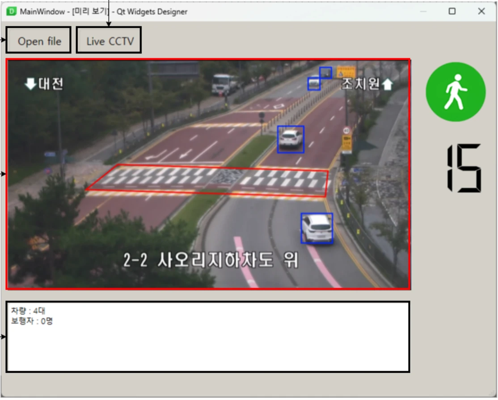
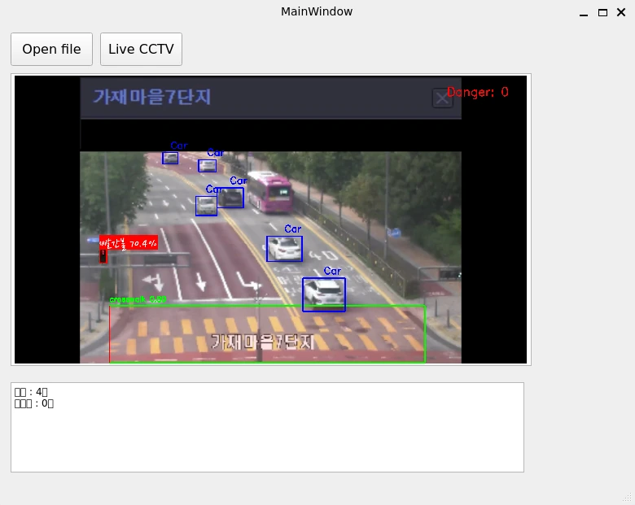
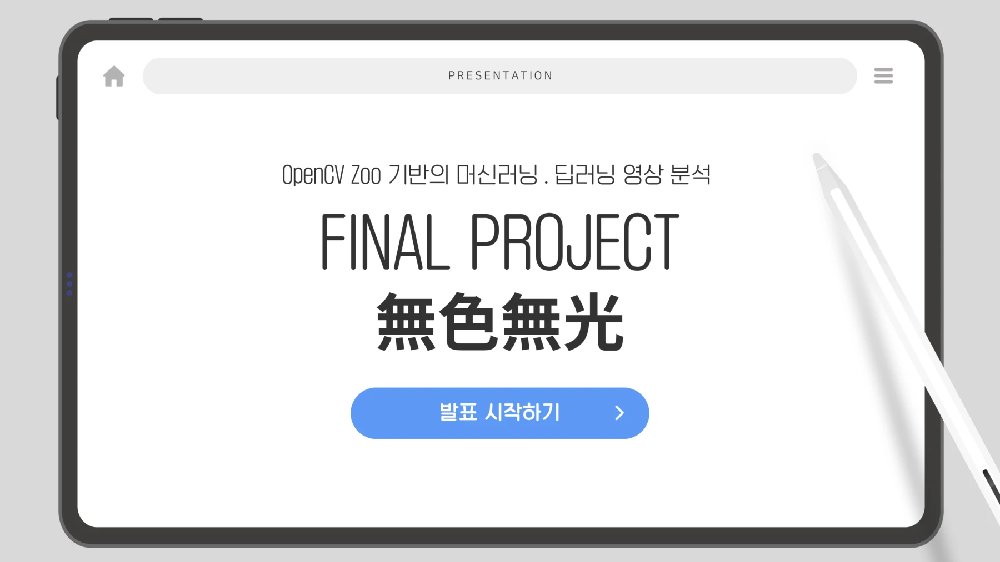
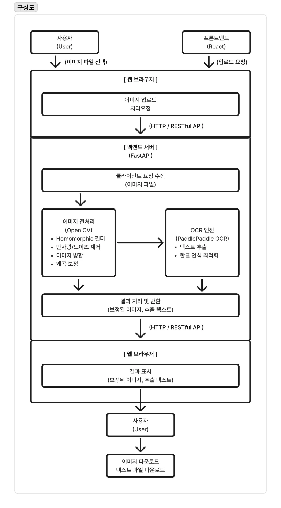
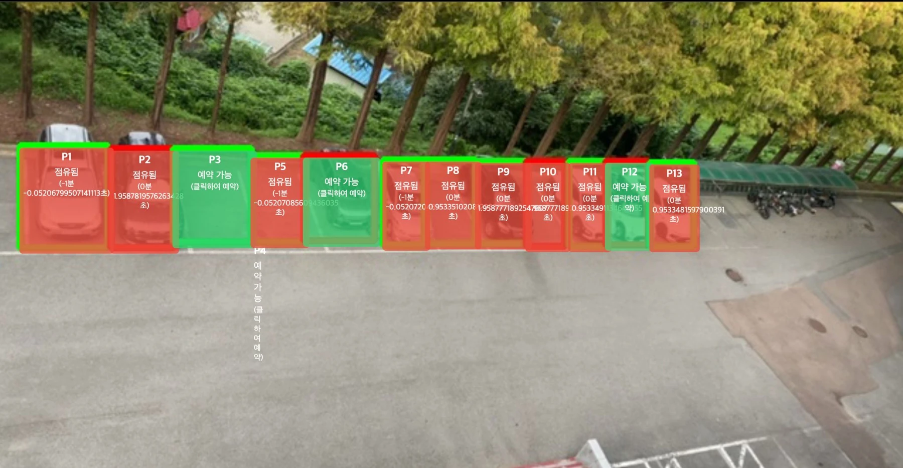
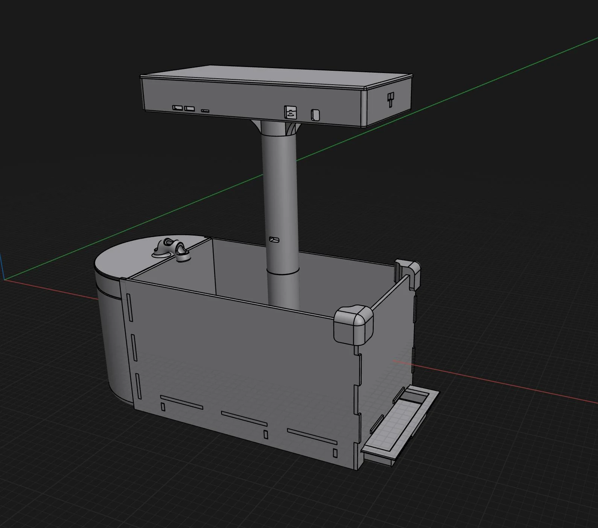
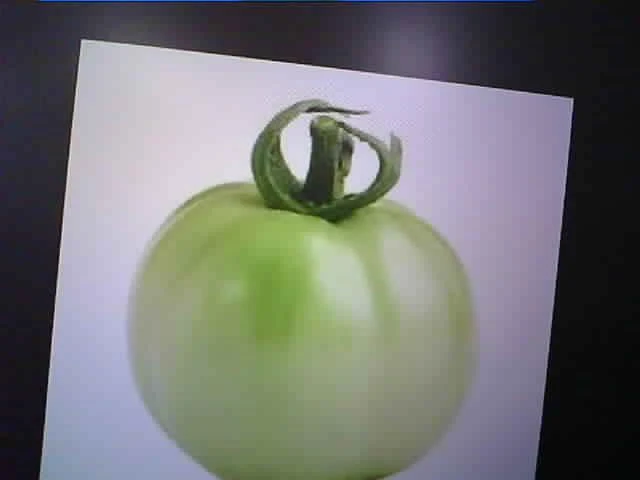
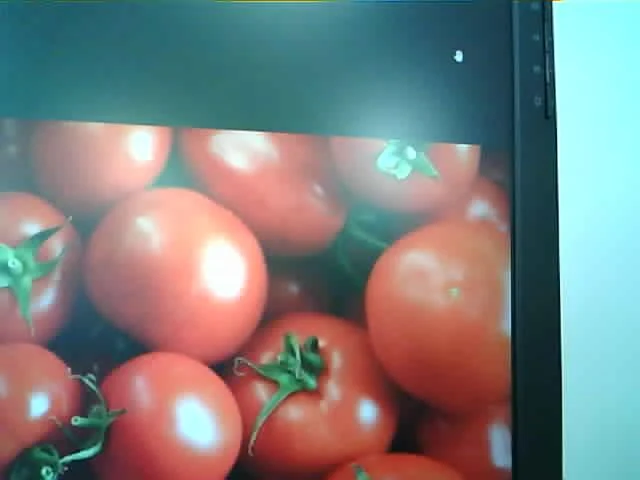
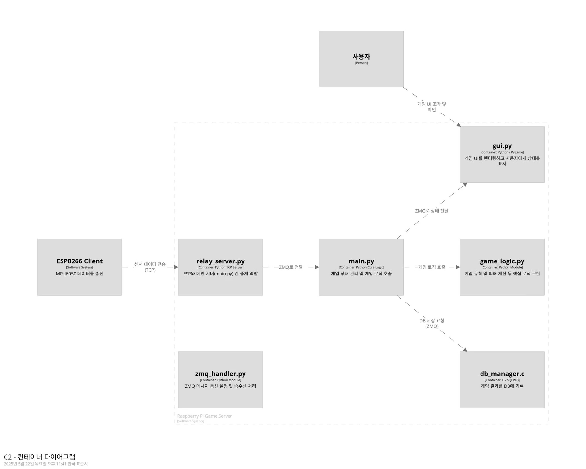

EDUCATION ARCHIVE / 2025
영상으로 풀어 본
네 가지 생활 문제
횡단보도 인식, 문서 보정·OCR, 주차 관리, 식물 생육 분석. 네 팀의 원본 발표 화면과 기술서로 읽는 프로젝트 기록.
같은 비전 기술,
서로 다른 네 가지 문제
횡단보도의 위험, 문서의 반사광, 주차장의 빈자리, 식물의 생육 단계. 홍익대 OpenCV 과정의 네 팀은 인식 결과가 실제로 쓰일 상황을 정하고 입력부터 화면까지 연결했습니다.

- 기간
- 2025년 9월 · 팀 프로젝트는 9월 18일 이후
- 산출물
- 기술서 · 프로그램 · 시연 · 최종 발표
- 읽는 관점
- 문제 → 처리 흐름 → 구현 → 남은 과제
TEAM 01 / CROSSWALK
횡단보도의 위험을 판단하는 화면
조영재 · 강덕호 · 김종훈 | Python · OpenCV · YOLO · PySide6
보행자와 차량을 찾은 뒤 신호와 횡단보도 영역을 함께 해석하면 어떤 경고를 줄 수 있을까. 1조는 CCTV 또는 저장 영상에서 위험 상황을 판단하고 경고음과 안내 메시지를 표시하는 프로그램을 만들었습니다.
1조 발표자료 7쪽의 Qt Widgets Designer 구성 화면. 영상·인식 영역·신호 안내를 배치한 설계를 보여 줍니다.

크게 보기 ↗1조 발표자료 11쪽. 저장된 시연 화면에 횡단보도와 객체 정보를 표시합니다.
- 영상 프레임 읽기
- 신호·횡단보도 탐지
- 보행자·차량 판단
- 메시지·경고음 출력
발표자료는 Detect_Traffic의 YOLOv5와 Detect_crosswalk·Detect_vehicle의 YOLOv8을 구분합니다. 신호등과 횡단보도를 먼저 찾고, 필요한 경우 횡단보도 탐지를 보완하며, 차량·보행자의 위치를 화면에 표시하는 구조입니다.
팀은 주제 선정과 모델 테스트, 학습, 프로그램 통합, 버그 수정, 시연 영상 제작을 거쳐 9월 25일 발표까지 진행했다고 기록했습니다.
실제로 다룬 문제
서로 다른 인식 모델의 출력을 하나의 위험 판단 흐름과 GUI에 연결하는 것.
발표에서 짚은 한계
CCTV 각도에 따라 신호등이 보이지 않는 문제, 영상 확보의 제약, 프레임 지연과 제한된 학습 데이터. 실제 도로 운영 성능을 검증한 사례는 아닙니다.
TEAM 02 / DOCUMENT SCANNER
반사광을 줄이고 문자를 읽는 스캐너
無色無光 | 이진우 · 고성운 · 황규범 | OpenCV · PaddleOCR · FastAPI · React
유광 문서나 화이트보드를 촬영하면 조명의 반사 때문에 글자가 가려집니다. 2조는 여러 장의 사진과 이미지 전처리를 활용해 문서의 가독성을 높인 뒤 OCR로 텍스트를 추출하는 웹 기반 스캐너를 주제로 삼았습니다.

크게 보기 ↗2조 최종발표 1쪽. 멀티프레임 글레어 제거 문서 보정 스캐너를 소개하는 원본 표지.

크게 보기 ↗2조 프로젝트 기술서의 시스템 구성도. 클릭하면 원본 비율의 큰 이미지로 볼 수 있습니다.
- 문서 사진 업로드
- 반사광·명암 보정
- PaddleOCR 문자 추출
- 웹 화면으로 결과 전달
React 화면에서 받은 이미지를 FastAPI에 전달하고 OpenCV 전처리와 OCR을 연결합니다. 기술서는 Homomorphic 필터와 감마 값 탐색으로 명암과 노이즈를 보정하고, Tesseract와 PaddleOCR을 비교한 뒤 PaddleOCR을 선택한 과정을 설명합니다.
공개 저장소의 일정에는 9월 19일 OCR 모델 교체, 22일 UI와 서버 개발, 23일 통합·보정, 24일 기술서·시연 준비, 25일 발표가 남아 있습니다. 단일 모델 실행보다 이미지 품질과 서비스 구성 요소를 함께 다룬 프로젝트입니다.
구현의 핵심
촬영 이미지의 품질을 먼저 다루고, 전처리 결과가 OCR과 사용자 화면까지 전달되도록 연결했습니다.
결과를 읽는 기준
OCR 정확도 개선은 팀 기술서의 설명입니다. 발표자료의 정량 지표는 측정 근거를 확인하지 못해 성과 수치로 인용하지 않았습니다.
TEAM 03 / SMART PARKING
차량이 아닌 주차 공간의 상태를 읽다
최지은 · 정은진 · 이하은 | YOLO-Seg · OpenCV · Flask
3조는 차량을 검출하는 것에서 한 걸음 더 나아가, 사용자가 지정한 주차 구역이 현재 비어 있는지 판단하는 시스템을 구성했습니다. 영상 업로드와 구역 지정, 프레임 분석, 주차 상태 표시를 웹 화면으로 연결하는 작업입니다.

크게 보기 ↗3조 발표자료 12쪽. 구역별 영역과 상태를 영상 위에 겹쳐 보여 주는 실제 구현 장면.
- 주차 영역 지정
- 차량 분할 마스크
- 영역 간 겹침 계산
- 빈자리 현황 표시
최종 기술서의 비전 로직은 차량 마스크와 주차 구역 마스크의 겹치는 비율(IoU)을 계산하고 임계값으로 점유 여부를 판단합니다. 차량이 잠깐 가려지거나 감지가 끊겼을 때 곧바로 빈자리로 바뀌지 않도록 점유 해제 지연도 둡니다.
Flask는 영상과 좌표를 받아 백그라운드 분석을 시작하고, 대시보드는 영상 스트림과 parking_status API로 상태를 갱신합니다. 영상 분석과 웹 전송을 분리하고 공유 프레임에 잠금을 사용하는 구성도 기술서에 설명되어 있습니다.
역할 분담
백엔드·통합, 프론트엔드, 비전 로직을 나눠 같은 상태 정보를 화면과 처리 코드에서 공유했습니다.
구현과 확장 구분
영상 위 점유 표시와 웹 대시보드 개발 기록이 있습니다. 데이터베이스 연동과 웹 예약의 확장은 완료 성과로 취급하지 않았습니다.
TEAM 04 / PLANT GROWTH
촬영 장치에서 생육 단계 분석까지
김준형 · 오현준 · 정도영 | ESP32-CAM · Spring Boot · Flask · YOLO
4조는 식물 사진의 생육 변화를 분석하는 흐름을 제안했습니다. ESP32-CAM이 촬영한 이미지를 서버에 저장하고 YOLO로 토마토의 단계를 판단한 결과를 다시 전달하는 구성입니다. 카메라·서버·모델·데이터베이스가 함께 등장합니다.

크게 보기 ↗4조 발표자료 13쪽에 수록된 설계 이미지. 촬영 장치의 배치 구상을 보여 줍니다.

크게 보기 ↗같은 발표자료 13쪽의 입력 예시. 실제 재배 현장 성능 시험을 입증하는 사진은 아닙니다.
- ESP32-CAM 촬영
- Spring Boot 저장
- Flask·YOLO 분석
- 단계·결과 전달
발표자료에는 CameraWebServer.ino, PhotoController·PhotoService·PhotoRepository, Flask의 app.py와 YOLO 학습 설정이 순서대로 제시됩니다. 이미지 수집과 저장을 맡는 서버와 추론 서버 사이의 통신을 설계한 흔적입니다.
YOLO 데이터 설정에는 토마토의 level 1~5, bug, leaf 클래스가 포함되어 있습니다. 같은 객체 검출 도구를 생육 단계 구분에 적용하고, 그 결과를 사진 기록과 연결하려는 접근입니다.

크게 보기 ↗4조 발표자료 13쪽. 붉은 토마토 사진을 입력 사례로 제시했습니다.

크게 보기 ↗4조 발표자료 14쪽의 ERD. 이미지 분석을 저장·조회 흐름과 함께 설계했습니다.
학습의 확장
PC의 영상 인식 예제를 촬영 장치, HTTP 통신, 저장소와 추론 서버를 잇는 구조로 확장했습니다.
확인 가능한 범위
설계 이미지와 코드·데이터 구조가 발표자료에 남아 있습니다. 장기간 생육 관찰과 분류 정확도 측정 결과는 확인하지 못했습니다.
자료와 기록
1·2·3조의 최종 발표 PDF와 프로젝트 기술서, 4조 발표 PPTX 및 2·3조 공개 저장소를 대조했습니다. 사진·화면·도표는 각 팀의 원본 자료에서 가져왔습니다. 발표에 제시된 목표와 설계는 현장 운영 성과와 구분했습니다.
당시 바인드소프트 소속 최수길의 강의·프로젝트 지도 경험을 정리한 기록입니다.